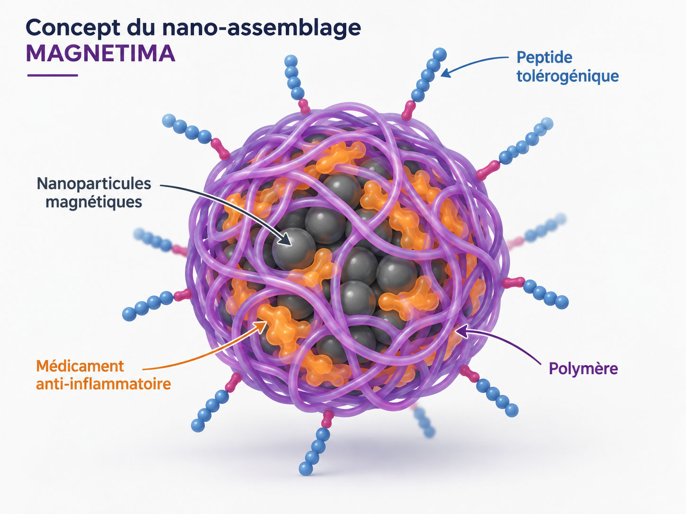
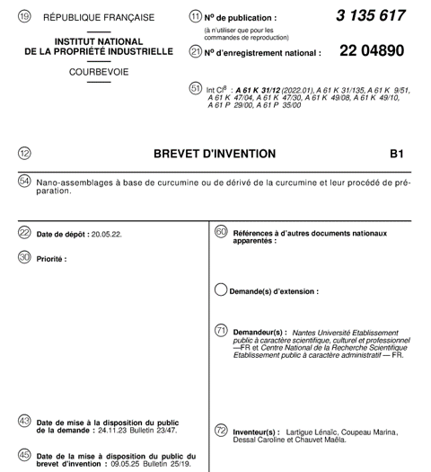

Financement
MAGNETIMA financé par l’ANR
MAGNETIMA est un projet de recherche en nanomédecine magnétique financé par l’ANR.


NanoBioMat / Actualités
Activités de recherche, conférences et actualités institutionnelles.
Financement
MAGNETIMA est un projet de recherche en nanomédecine magnétique financé par l’ANR.

Conférence
Léa Ponroy a présenté ses travaux de thèse sur les nanoassemblages magnétiques et photoactifs à PHOTONANO26, à Paris.

Conférence
Marie-Léa Lalanne a présenté ses travaux de thèse sur l’hyperthermie magnétique et les nanoparticules magnétiques pour des applications biomédicales à l’Université d’Angers.

Propriété intellectuelle
Le brevet français FR 3 135 617 B1 a été délivré en mai 2025.
